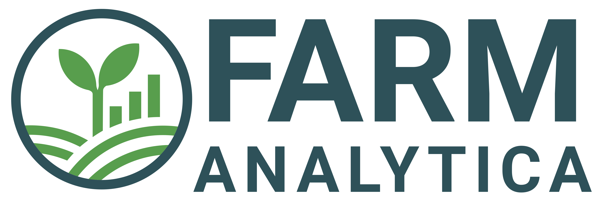

Optical (Sentinel-2)
Vegetation index time series (NDVI, EVI, SAVI, GNDVI), RGB and composite imagery, and multispectral download.
Vegetation indices, radar, elevation, bare-soil composites, climate charts, and field sampling — the plugins supported by FARM Analytica, unified in one Google Earth Engine-powered interface.
Overview
FARM tools unifies the plugins maintained by FARM Analytica — from Sentinel-2 vegetation indices to radar, elevation, bare-soil composites, climate charts, and field sampling — all integrated with Google Earth Engine inside QGIS.
Modules
Each module covers a stage of the remote-sensing and fieldwork workflow.
Vegetation index time series (NDVI, EVI, SAVI, GNDVI), RGB and composite imagery, and multispectral download.
Decades-long Landsat time series and imagery for historical land and crop monitoring.
Cloud-independent radar backscatter analysis for all-weather land monitoring.
Download elevation data and derive terrain products for any area of interest.
Synthetic bare-soil image composites using GEOS3 multi-temporal bare-soil detection.
Capture field points, sample polygons, and auto-pick raster-optimal locations (e.g. NDVI peaks) — export to CSV, GPX, and PDF.
Workflow
From authentication to results: pick a module, configure inputs, and export — all in QGIS.
Set up your Google Cloud project ID and authenticate with Google Earth Engine through the plugin.
Choose a module — Optical, Landsat, SAR, DEM, SYSI, ClimaPlots, or Field Guide — set your area and parameters, then run.
Explore interactive charts and layers, then export as CSV, GPX, GeoTIFF, or PDF.
GEE Setup
Set up Google Earth Engine and configure FARM tools to start using every module.
Create a new project and link it to your GEE account.
→ Google Cloud ConsoleOpen FARM tools in QGIS, click Setup Authentication, enter your Cloud project ID, and authorize access.
Resources
Everything you need to use, troubleshoot, and contribute to FARM tools.
Browse the source code, releases, and documentation on GitHub.
→ Open repositoryFound a bug or have a suggestion? Open an issue and help improve FARM tools.
→ GitHub IssuesFARM tools is released under the GNU General Public License v2.0 or later.
→ Read the licenseProject
FARM tools began as the undergraduate final project (TCC) of Caio Arantes, developed under the supervision of Prof. Dr. Lucas dos Rios Amaral. Today it is a free and open-source project maintained with the support of FARM Analytica, committed to technology diffusion and the open-source philosophy.

Technology and field intelligence working together to support practical operations.
Speak with FARM about exclusive custom solutionsAcademic supervision by Prof. Dr. Lucas Rios do Amaral and M.Sc. Isabella Alves da Cunha.